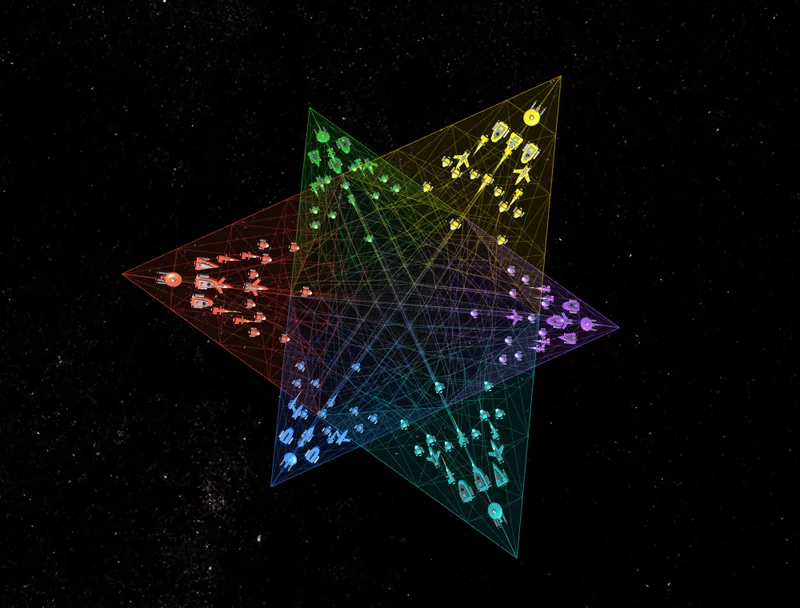
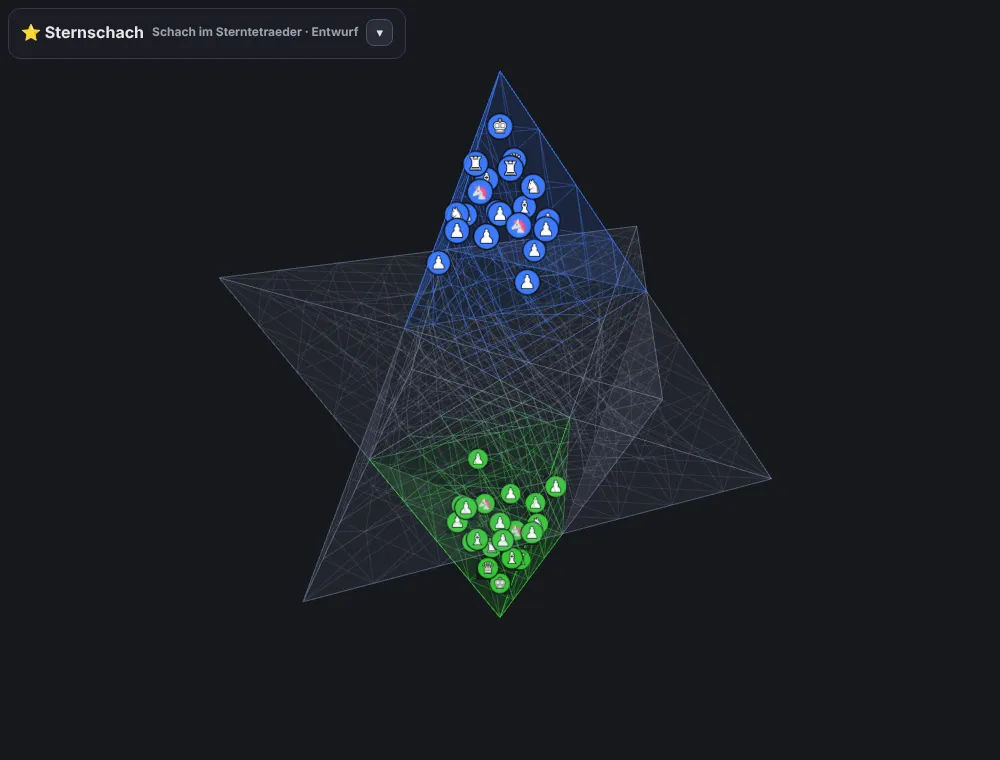
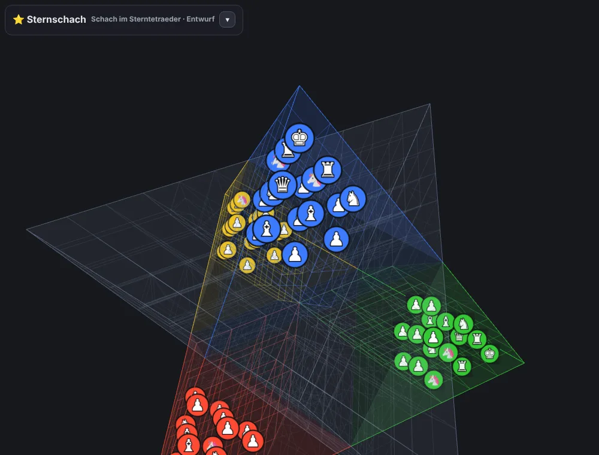
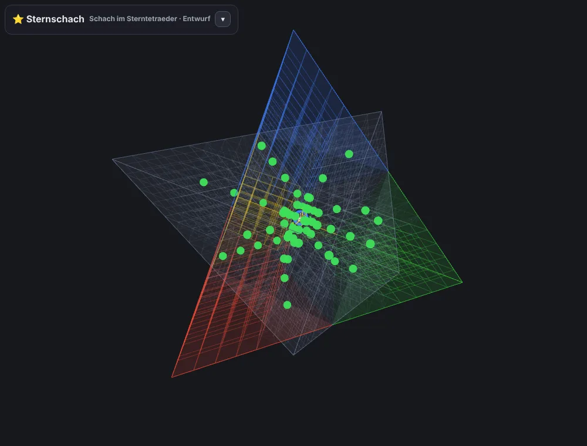
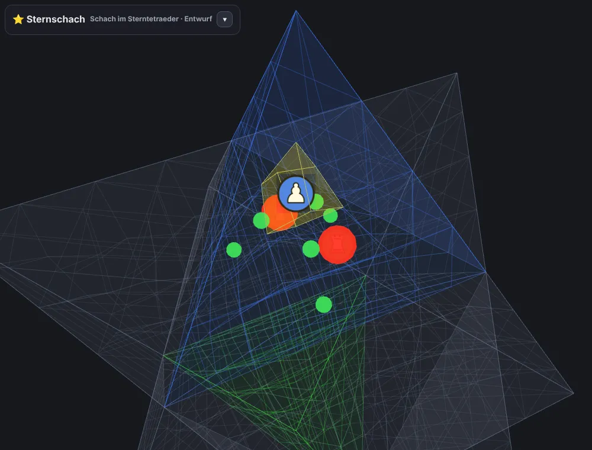
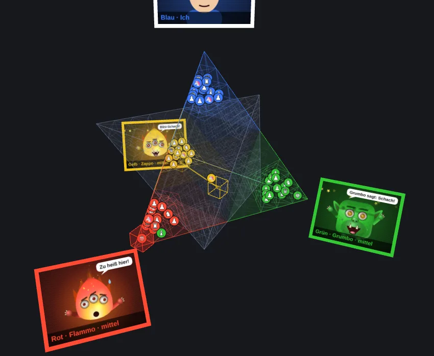

Sternschach
Der Sterntetraeder ist der räumliche Davidstern: zwei Tetraeder, die einander durchdringen. Von oben entlang seiner Achse gesehen ist er genau der sechszackige Stern des Drei-Personen-Schachs. Im Sternschach stehen die Heere in seinen Spitzen – und kämpfen sich durch die Mitte.

Das Spielfeld

- Das Spielfeld ist ein genauer Sterntetraeder mit 864 Feldern.
- In jeder der 8 Spitzen liegt ein großes Rhomboeder aus 3 × 3 × 3 gleichen Rhomboeder-Feldern – schräge Würfel mit Winkeln von 60°, genau so schräg wie die Kanten der Spitze. Das ist die Heimat eines Heeres. Die 8 Spitzen-Rhomboeder berühren sich in der Mitte des Sterns. Freie Spitzen gehören niemandem.
- Dazwischen liegen sechs Zwischenräume, je um eine Ecke des inneren Oktaeders. Ihre Felder sind keilförmig verzogen und werden zur Oberfläche hin flacher.
- Alle 8 Spitzen sind völlig gleichwertig: Von jeder Spitze aus sieht der Stern gleich aus.
- Felder werden nach Bereich benannt: S1–S8 für die Spitzen, M1–M6 für die Zwischenräume, dazu drei Ziffern für die Lage, zum Beispiel S1·123 – das Spiel zeigt beim Antippen jedes Feld mit Namen an.
Spieler und Spitzen

- Zu zweit stehen sich Blau und Grün an den beiden Polen gegenüber.
- Zu dritt stehen Blau, Rot und Lila an drei Spitzen desselben Tetraeders – wie die drei Spieler im Drei-Personen-Schach.
- Zu viert besetzen Blau, Rot, Grün und Gelb alle vier Spitzen eines Tetraeders; jeder ist von jedem gleich weit entfernt.
- Zu sechst stehen die Heere im Ring der sechs Spitzen um die Mitte – wie die sechs Reiche. Die Pole bleiben frei.
- Zu acht ist jede Spitze besetzt: Blau, Rot, Grün und Gelb im einen Tetraeder, Lila, Türkis, Orange und Rosa im anderen. Jeder hat genau gegenüber einen Gegner.
- Gezogen wird reihum. Wer einlädt, legt fest, wie viele mitspielen, wer Computer ist und wie die Partie endet.
Die Aufstellung

Jedes Heer hat 17 Figuren, gestaffelt nach dem Abstand zur Spitze: ganz außen der König, eine Lage tiefer Dame und zwei Türme, dann zwei Läufer, zwei Springer und zwei Einhörner, davor eine Wand aus sieben Bauern. Dahinter bleibt in der Spitze noch Platz bis zur Mitte.
Die Figuren

Jedes Feld hat 6 Flächen, 12 Kanten und 8 Ecken. Danach richten sich die Figuren:
- Turm: durch eine Fläche ins Nachbarfeld und durch die gegenüberliegende Fläche weiter – geradeaus, bis etwas im Weg steht.
- Läufer: über eine Kante schräg ins gegenüberliegende Feld und über dessen gegenüberliegende Kante weiter – wie der Läufer auf einem Brett.
- Einhorn: über eine Ecke ins gegenüberliegende Feld und weiter. Es stammt aus dem Raumschach von 1907.
- Dame: Turm, Läufer und Einhorn in einer Figur.
- König: ein Schritt, wie ihn die Dame machen kann.
- Springer: zwei Felder geradeaus und eins quer dazu – über alles hinweg.
- In den Spitzen verlaufen alle Linien wie in einem schrägen Würfel. In den Zwischenräumen und durch die Mitte knicken sie – das Spiel zeigt jede Linie an.
- Im Setzen-Werkzeug des Analysebretts gibt es außerdem die Märchenfiguren aus dem Schach der 6 Reiche: Herzogin, Gouverneur, Erzbischof, Kanzler, Amazone und Nachtreiter.
Die Bauern

- Bauern ziehen ein Feld weiter weg von der eigenen Spitze – in der Spitze sind das die drei Richtungen zur Mitte.
- Solange sie in der eigenen Spitze stehen, dürfen sie dabei auch zwei Felder geradeaus ziehen.
- Geschlagen wird schräg nach vorn: über eine Kante, die zwei Schritte weiter von der eigenen Spitze wegführt.
- Umwandlung: Betritt ein Bauer eine fremde Spitze – besetzt oder frei –, wird er zur Dame.
Schach, Matt und Spielende
- Wer im Schach steht, muss es aufheben. Kein Zug darf den eigenen König im Schach lassen. Ein König im Schach ist rot umrahmt.
- Spielende – wählt der Gastgeber: „Erstes Matt entscheidet“: Es gewinnt, wer mattsetzt. „Ausscheiden“: Wer matt ist, scheidet aus und seine Figuren verschwinden; es geht weiter, bis einer übrig ist.
- Wer nur noch den König hat, ist geschlagen. Wer nicht ziehen kann, ohne im Schach zu stehen, setzt aus.
- Sobald einmal geschlagen wurde: Nach 30 Runden ohne Schlagen und ohne Bauernzug entscheidet das Material (Bauer 1, Springer, Läufer und Einhorn 3, Turm 5, Dame 9).
Den Überblick behalten

- Drehen: ziehen. Zoomen: Mausrad oder zwei Finger. Verschieben: Rechtsklick oder zwei Finger. Doppelklick: ganzer Stern.
- „🎯 Meine Armee“ schaut von außen in die eigene Spitze, „Farben“ blendet einzelne Heere blass oder aus, „Bereich“ greift eine Spitze oder einen Zwischenraum heraus.
- Figur antippen: Ihre Züge leuchten grün, Schlagzüge rot. Gegnerische Figuren zeigen ihre Züge hellblau und orange, nur zur Ansicht. Der letzte Zug ist in der Farbe des Ziehenden markiert.
Was alle Varianten gemeinsam haben
- Gegner: Jeder Platz kann ein Mensch an diesem Gerät, ein online eingeladener Mensch oder ein Computer sein – in vier Stärken: leicht, mittel, stark und Meister. Der Meister denkt auch die Antwort der Gegner voraus.
- Monster mit Charakter: Die Computergegner heißen Blubbo, Grumbo, Flammo, Zappo, Spuki, Kraki, Sonno und Fluffi. Sie freuen und ärgern sich auf den Monitoren, schmieden Bündnisse gegen den Führenden, verraten sie auch mal, rächen sich – und sprechen auf Wunsch. Man kann mit ihnen im Chat verhandeln („Grumbo, lass uns gemeinsam Rot angreifen!“). Sie merken sich außerdem, wie die Menschen spielen.
- Hilfspflicht (Option ab drei Spielern): Steht ein Spieler im Schach, muss jeder, der vor ihm zieht, ihm helfen: Ist er matt, muss der Zug ihn befreien; ist er nicht matt, darf der Zug ihn nicht mattsetzen. Wer nicht helfen kann, besiegelt das Matt.
- Uhr: Zeit pro Zug, Zeit pro Partie oder ohne Uhr. Läuft die Zugzeit ab, verfällt der Zug; ist die Partiezeit verbraucht, scheidet man aus.
- Online: live mit Monitoren, Kamera, Mikrofon, Chat, Emoji-Reaktionen, Untertiteln und automatischer Übersetzung – oder als Fernpartie, bei der jeder zieht, wann er Zeit hat (mit Benachrichtigung, wenn man dran ist). Partien lassen sich in der öffentlichen Lobby anbieten; der Gastgeber entscheidet, ob man zuschauen darf.
- Nach der Partie: Nachspielen Zug für Zug, Analysebrett mit Vorschlägen des Computers, Auswertung mit Schlüsselmomenten, psychologischer Auswertung (Rache, Nervosität nach Verlusten, stille Bündnisse, gesagt und getan) und auf Wunsch einem professionellen KI-Bericht.
- Außerdem: Farben frei wählbar (auch mit Zeichen für Farbenblinde), Geräusche, Pause, Speichern und Laden, „Meine Partien“, Einführung für Neulinge, als App installierbar, Vollbild.
Sternschach ist ein Entwurf und wird weiterentwickelt.